The Shield, The Light, The Coin, The Quill, The Shadow, The Masked — including power struggles and player renown scale.
Done
✓
Mr. H & Mr. Hoots — anchor NPC profiles
The Satyr bartender and the ever-watching owl are fully established.
Done
✓
DM Toolkit webapp (v1)
Four tabs: Session Randomizer, NPC Generator, World State tracker (threads & renown), Session Log.
Done
✓
Three map images (Badger's End day, night, basement)
Visual assets exist for the inn — need corresponding written gazetteer.
Done
Phase 1World Content Foundation
Write the physical world so any DM can drop a scene into it. Locations before mechanics.
Inn Gazetteer — First Floor
Common room layout, the bar, the kitchen, secret doors, key set pieces. Where does everyone sit?
High
Inn Gazetteer — Basement
Storage, cellars, whatever Mr. H doesn't want people to find, and the deeper unknown below.
High
Inn Gazetteer — Upper Floor
Bedrooms, private rooms, permanent residents, and rooms that never seem to have the same guest twice.
High
City District — Magic & Alchemy
Home turf of The Quill. Shops, the Arcane Circle's hall, rare-materials trade. Delivered in the Locations tab.
High
City District — Barracks / Fighting
Guard barracks, training yards, fighting pits (legal and otherwise). The Shield's stronghold. Delivered in the Locations tab.
High
City District — Town Hall
Seat of government, courts, records. Governor Ashvale's domain and the political theatre of the city. Delivered in the Locations tab.
High
City District — Sanctuary & Graveyard
The temple, the poor district it serves, and what — or who — sleeps in the graveyard. Delivered in the Locations tab.
High
City District — Harbor & Smuggler's Den
Docks, warehouses, harbormaster's office. The hidden smuggler's den beneath — The Shadow's territory. Delivered in the Locations tab.
High
City District — Market & Artisans
Merchant stalls, artisan workshops, guild halls. Mira Kael's beat and the beating heart of The Coin. Delivered in the Locations tab.
High
Terrain around the Inn
What surrounds Badger's End? Woods, roads, ruins, natural features that adventures can spill into. Maps made in Inkarnate.
Medium
Reconcile knowledge base with 5.5e (2024 rules)
Review existing 5e core-rules docs and add 5.5e deltas — weapon masteries, updated spells, exhaustion, jump rules, revised conditions — so DMs can run either edition.
Medium
Phase 2Table Prep — Foundry-first
Turn maps and assets into things you can actually run. Foundry VTT is the primary target; each asset also gets a print-ready export so it works in person too.
Inn scene in Foundry — First Floor
Grid alignment (5 ft), walls, doors, lighting for windows and hearth.
High
Inn scene in Foundry — Basement
Grid, walls, low-light setup, hidden doors or passages if the gazetteer calls for them.
High
Inn scene in Foundry — Upper Floor
Bedrooms as walled sub-rooms, doors, per-room lighting.
High
City map (Inkarnate) → Foundry scene
Overview map with district regions as scene notes / pinned locations.
High
Regional map (Inkarnate) → Foundry scene
Roads, woods, ruins, and points of interest around Badger's End.
Medium
District battle-maps (as needed)
One playable scene per district for likely encounter spots — market square, dockside, temple grounds, etc.
Medium
Anchor NPC tokens
Portrait tokens for every anchor NPC in a consistent style — any DM's session looks the same.
High
Common NPC & monster token library
Guard, thug, cultist, commoner, beast — the recurring supporting cast, ready to drop into any scene.
Medium
Foundry compendium (NPCs + stat blocks)
Bundle tokens with prewritten stat blocks so DMs can drag-and-drop.
Medium
Handouts uploaded to Foundry
Letters, wanted posters, map fragments — ready to reveal to players mid-session.
Medium
Print-ready map exports (tiled)
High-res exports tiled across letter or A4 pages for in-person play.
Low
Printable NPC cards
One page per anchor: portrait, tone notes, quick stats — laminated for reuse at the table.
Low
Printable d100 reference sheets
Events and Chaos tables in a quick-grab paper format for in-person sessions.
Low
Phase 3The Random Tables
The heart of the sandbox — d100 tables that make every session feel alive and unpredictable.
Draft d100 Events Table
100 rollable events across mundane, weird, and dangerous tones. Tagged by which factions or districts they touch. Delivered in the Events tab.
High
Draft d100 Chaos Table
Optional table for shaking up a session — weirder, wilder, funnier. Never mandatory. Delivered in the Chaos tab.
High
Weather / Season sub-table
Expand the current weather roll to reflect seasons and add short atmospheric consequences.
Medium
Rumor / Overheard-at-the-Inn table
Short d20 or d100 of things patrons might be muttering about tonight — some true, some misleading.
Low
Phase 4DM Tool Upgrades
Bring the tool up to the vision — percentile dice, Chaos rolls, and quick reference.
Percentile (d100) dice UI
Replace the small dice with a proper d100 roller wired to the Events table. Live in the Events and Chaos tabs.
High
Chaos tab with opt-in toggle
Dedicated Chaos roller the DM can enable per session — never fires unless they say yes. Live in the Chaos tab, with opt-in framing.
High
Locations reference tab
Quick browser for the Inn floors and city districts — drawn from Phase 1 content. Live as the Locations tab.
Medium
Persistent notes per anchor NPC
A place to log what each anchor NPC did or learned this session — carries across DMs.
Medium
Quick encounter roller
Button that rolls a lightweight combat or social encounter appropriate to the current district.
Low
DM-Owned NPC tracker (private to each DM)
A separate section from the shared World State where each DM can log their own recurring NPCs — villains, allies, patrons — that only appear in their adventures. Exportable so DMs can back up their private cast.
Medium
Hero's Board (quest posting system)
In-tool bulletin board where DMs can post quests, bounties, and pleas for help attributed to NPCs, guilds, or factions. Postings persist between sessions unless resolved or expired — giving any DM a ready-made menu of hooks to draw from.
Medium
Phase 5Fill the Anchor Cast
Turn the story anchor NPCs into fully written characters every DM can pick up and play.
Captain Wren — City Guard Captain
Anchor for The Shield. Voice, backstory, what they want, what compromises they've made. Profile in Characters tab; race & final details to be picked at the table.
Medium
Mira Kael — General Merchant
Anchor for The Coin. What she sells, what she knows, and who she owes. Profile in Characters tab; race & final details to be picked at the table.
Medium
Aldric Fenn — Eccentric Wizard
Anchor for The Quill. What he's researching that will absolutely go wrong. Profile in Characters tab; race & final details to be picked at the table.
Medium
Governor Ashvale — City Leader
Political authority. What they publicly want vs. what they privately need. Profile in Characters tab; race & final details to be picked at the table.
Medium
Sister Corvin — Temple Cleric
Anchor for The Light. Who she protects and the price of that protection. Profile in Characters tab; race & final details to be picked at the table.
Medium
Bar staff & chef
Senior barkeep, junior barkeep, late-night barkeep, chef — enough character to be memorable, not enough to overshadow. Profiles in Characters tab.
Medium
Add a Shadow anchor NPC
The Underworld currently has no anchor — someone at the smuggler's den to represent them.
Low
Seed a Masked anchor (mysterious)
A figure who *might* be Hidden Council. Never confirmed. Slow-burn mystery across DMs.
Low
Phase 6Playable Content
Everything needed to actually run — and hand off — a night at Badger's End.
Starter adventure — "Night One at Badger's End"
A 1–2 session module that showcases the Inn, the city, factions, and the random tables in action.
High
DM quick-start guide
One page: how to prep for a session, how to use the tool, which docs to read first.
Medium
Session-zero player handout
What players know about the city, the Inn, the tone — and what they don't.
Medium
Three–five short adventure hooks by faction
Small, self-contained one-shots any DM can grab — one per major faction.
Medium
House rules document
Any rule modifications specific to Badger's End — keeps every DM on the same page.
Low
StretchIdeas & Nice-to-Haves
Later ideas — not blocking anything. Add, remove, or promote them freely.
Interactive city map
Clickable regions that link to gazetteer entries and current world state.
Low
Between-session faction moves tracker
What each faction is quietly doing while the party isn't looking — drives long-term consequences.
Low
Music & ambiance suggestions
Per-scene-type playlists or ambient recommendations for the tone of Badger's End.
Low
Player-facing lore doc
Sanitized version of the world for players — what their PCs know, no spoilers.
Low
Badger's End is an open-world D&D sandbox — built for 5e (and compatible with 5.5e / 2024 rules).
A mysterious inn sits at the heart of a living city, designed so that different DMs and players can jump
in and out of the world through independent sessions or connected arcs. Sessions are shaped by rolled events,
random chaos, and a rotating cast of NPCs, so that no two nights at the inn are the same.
The Core Concept
Unlike a traditional campaign where one DM leads a single continuous adventure, Badger's End is built
for rotation. Any DM at the table can run a night — a one-shot mystery, a two-session heist, or a
chapter in a longer arc. When they hand back the world, the next DM inherits it. Players can come and go
too; the inn is always here, and there's always a reason someone new might walk through the door.
The result is a shared world that keeps developing between sessions, whether or not any single DM is running.
NPCs remember the party. Factions notice when their allies drift. Threads that one DM plants may not pay off
for months, when another DM picks them up.
Opening Scene — the world of Badger's End in fifteen seconds.
The Setting
The Inn. Badger's End is a three-story tavern run by Mr. H, a Satyr bartender who left the Fae Wild
for reasons he won't discuss. The common room is neutral ground for every faction in the city. The basement
holds more than storage. The upper floor's rooms rarely have the same guest twice.
The City of Vellmere. Six districts, each with its own tone and its own secrets — the magical & alchemical
district, the barracks and fighting halls, the town hall, the sanctuary and its graveyard, the harbor with
its hidden smuggler's den, and the artisan market.
Beyond Vellmere. Past the city walls, roads wind through woods and past ruins that older maps
don't always agree on.
The Factions
Six competing powers shape everything in the city. No single one of them fully controls it.
The ShieldCity guard, law, order, protection.
The LightTemple, faith, healing, public goodwill.
The CoinMerchant guild, trade, wealth, the port.
The QuillArcane circle, knowledge, magical law.
The ShadowSmugglers, crime, information brokers.
The MaskedThe hidden council pulling strings.
Players earn renown — or resentment — with each faction, and allegiances have consequences.
The inn itself is neutral ground, respected by all.
The Cast
Anchor NPCs are permanent fixtures every DM plays consistently — Mr. H, Mr. Hoots the
ever-watching owl, Captain Wren, Governor Ashvale, Sister Corvin, and others. They grow and change,
but only through what actually happens at the table.
Session NPCs come from a randomized generator that spins up new patrons, contacts, and
complications each night. When one earns a place in the group's memory, they can be promoted to anchor status.
DM-Owned NPCs belong to a specific DM's story arc — recurring villains, allies, rivals,
or patrons that only appear when that DM is running. They're not shared with other DMs and stay tied to
their creator's adventures. This lets each DM build their own persistent cast without stepping on anyone
else's canon.
How a Session Works
Before the Session. The DM reviews the current World State — active threads, notable NPCs,
faction tensions — and rolls the world alive. A d100 Events table sets what's happening in
the city, at the inn, and among the factions. An optional d100 Chaos table adds a wild card if
the DM wants to shake things up. The DM also decides which of their own recurring NPCs (if any) will
appear tonight.
Opening the Scene. Most sessions begin at the inn — or wherever the party left off. The
DM sets the mood using the rolled state (weather, city event, atmosphere at the inn) and presents an
opening hook. Players describe how their PCs arrive, return, or wake up in one of the upstairs rooms.
Returning players pick up whatever renown, gear, and relationships they left with.
The Sandbox in Play. Players choose their own path — chase the hook, follow up on a lead
from a previous session, seek out an anchor NPC, or wander into any of the six districts to find their own
trouble. They can also check the optional Hero's Board in the common room, where NPCs, guilds,
and factions post quests, bounties, and pleas for help; postings can persist between sessions or appear
fresh, giving the party a self-serve menu of adventures when they want one. Anchor NPCs are always
available; randomized patrons fill any new encounters. Every choice can move renown with one faction or
another — and every faction is watching.
Handling Continuity. Sessions can stand alone (a single-night mystery, a bar brawl gone strange)
or connect into longer arcs run by the same DM across multiple nights. Different DMs can trade off in either
mode — picking up loose threads, or starting fresh alongside them. Players are welcome to bring their PCs
into anyone's session; the world keeps track of who they are.
Wrapping Up. Before the group breaks, the DM logs the session: threads opened or resolved, renown
gained or lost, notable events for the World Event Log, and any promoted NPCs. This handoff is what makes
the sandbox work — the next DM inherits a living world, not a blank page.
Between Sessions. Time passes in-world. Factions make quiet moves. The next session might be the
same DM continuing an arc, or a different DM starting something new. Player characters carry everything
with them: their renown, their reputation, and the memory of the regulars who remember them right back.
Where It Lives
Primary play is on a self-hosted Foundry VTT server, with maps made in Inkarnate
and imported as playable scenes with grids, walls, and lighting. Every asset is also designed to
work in person — print-ready maps, NPC cards, and quick-reference sheets — so a session
can move to a physical table without losing anything.
What Makes It Different
Traditional campaigns are the DM's story. Badger's End is a place — one that keeps
being interesting whether or not any particular story is running. Players return to the inn between
adventures. The world moves on without them. Small choices come back around. It's less like a novel,
more like a neighborhood.
The living cast of Badger's End. Established anchors are fully written and played consistently
across DMs. Story anchors have profiles waiting to be filled in with a name, race, and
specifics at the table when they first appear.
Established Anchors
Mr. H
Head Bartender — heart of the Badger's End
Established
“Another round? Of course. Sit. You look like someone who needs to talk.”
RaceSatyr (Fae Wild origin)MysteryWhy did he stay?
Warm, unhurried, and almost impossible to rattle. Mr. H remembers every regular's drink, notices when
someone is off, and has a gift for making strangers feel like they've been coming here for years. He
deflects personal questions with a laugh, a refilled glass, or a well-timed change of subject —
never coldly, never obviously. He simply doesn't go there.
Ideal. A good bar is the safest place in any city. He intends to keep it that way.
Flaw. Will not be cornered into honesty about himself. Ever.
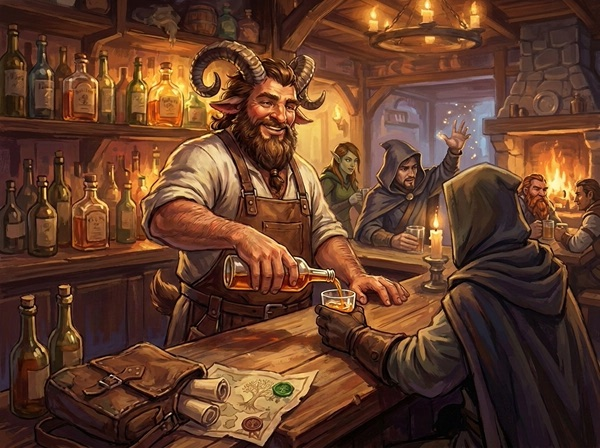
Mr. Hoots
The Owl — permanent observer
Established
You turn around and he's just… there. Watching.
SpeciesOwl (nature: unknown)MysteryVery high — what is he?
Mr. Hoots doesn't have a personality so much as a presence. He observes. He appears. Players
will be mid-conversation and glance sideways to find him sitting on their shoulder, the table next to
them, or the chair they were about to sit in. Nobody sees him arrive. Nobody sees him leave.
Rule. No DM confirms his nature. Every DM gets to add one detail that deepens the mystery.
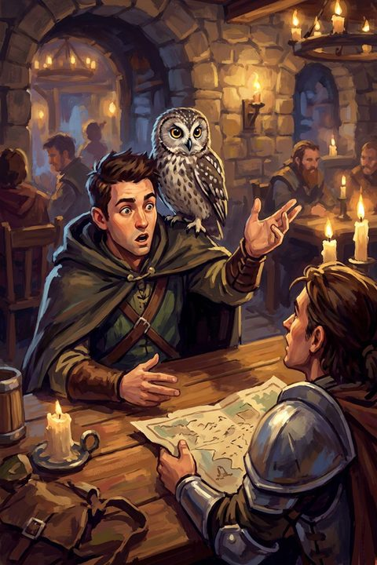
Story Anchors
Captain Wren
City Guard — the party's bridge into city business
The ShieldStory
“I'm not asking you to do anything official. I'm asking as someone who's tired.”
RaceHumanPatrolTavern district & surrounding market streets
A guard who has worked this district long enough to know every face, every alley, and every excuse.
Not corrupt — genuinely wants to keep the peace — but realistic about what the guard can
and can't do with what they've got. The shadier parts of town are technically under their jurisdiction
and practically out of their reach.
Provides. Off-the-record hooks over drinks. Local knowledge on who runs what. A friendly face
when the party gets into official trouble.
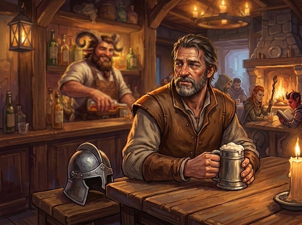
Mira Kael
General Merchant — economy anchor & rumor node
The CoinStory
“Everything has a price. The trick is knowing which price is fair and which one is interesting.”
RaceHalflingShopMarket district, near the tavern
Sharp, sociable, and genuinely enjoys a good deal — even when she's on the losing end, if the
story is good enough. Trades in goods but also in information, favors, and reputation. Has connections
across the city and through the port, which means she hears about things before most people do.
Provides. A consistent place to buy and sell. Market and port rumors. Occasional leads on rare
goods or specific people. Uses the phrase “I might know someone” a lot.
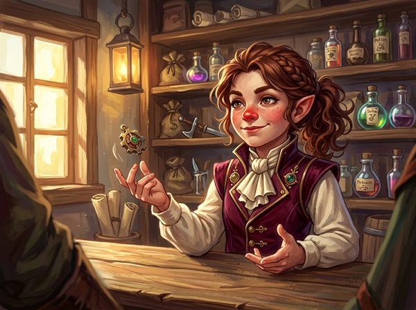
Aldric Fenn
Eccentric Wizard — lore dispenser & chaos engine
The QuillStory
“Yes, yes, I heard you, I'm just also thinking about seventeen other things — what did you say your name was? Doesn't matter, look at THIS —”
RaceHumanBaseA corner table buried in books
Brilliant, distracted, and completely unaware of how he comes across. Always in the middle of
something — a theory, an experiment, a translation — and conversations tend to begin
mid-thought. Not malicious. Not reckless on purpose. Simply doesn't always think about consequences
until they're already happening.
Provides. Magical theory, historical lore, creature knowledge — and occasionally an
experiment that needs rescuing. Frequently.
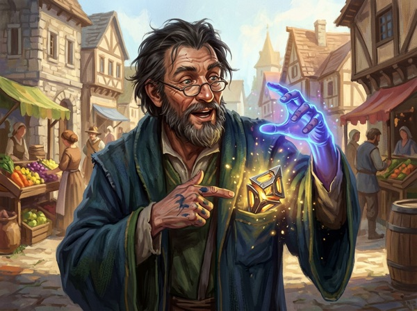
Governor Ashvale
City Leader — political authority over the city
The ShieldStory
“This city runs because everyone in it believes it runs. Let's keep things quiet, shall we?”
RaceHalf-ElfBaseTown hall district
Composed, politically sharp, and very good at making people feel heard without actually promising
anything. Not cartoonishly corrupt. Not a pure idealist. A pragmatist who has made compromises they
don't entirely like and lives with that by telling themselves it serves the greater stability of the
city. Genuinely capable — that's what makes them interesting.
Ideal. Order is not the absence of problems. It's the management of them.
Flaw. Prioritizes stability over justice when forced to choose. Has made that choice before.
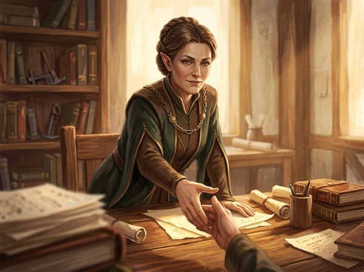
Sister Corvin
Temple Cleric — spiritual anchor & healer
The LightStory
“I don't ask why you need healing. I ask whether you're going to keep doing the thing that got you here.”
RaceHumanDeityOpen — or tied to a cleric/paladin PC's faith
Grounded, plainspoken, and harder to shock than almost anyone in the city. Faith has made her patient
rather than preachy. Extends the same compassion to someone who worships a different god as to one of
her own flock — which occasionally causes friction with her institution. Shows up at the Badger's
End because she finds it honest; people are exactly what they are in there.
Provides. Divine healing, disease/curse removal, and resurrection services with story weight
attached. Meaningful roleplay for paladin and cleric PCs.
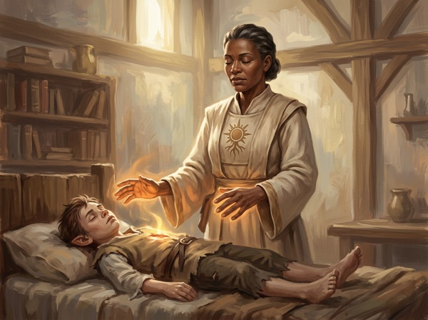
Bar Staff & Kitchen
Familiar faces who keep the Badger's End running. Not full anchors, but present enough that players
notice when they're missing. Names to be filled in at the table.
Senior Barkeep
Mr. H's right hand — evenings & busy nights
No-nonsense, efficient, quietly protective of the regulars. Knows every regular's drink and
character. Steps in quietly when a situation is about to become a situation. Has a background
they don't talk about.
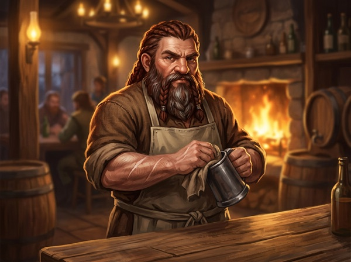
Junior Barkeep
Eager and everywhere — all hours
Newer to the job. Still learning the regulars. Occasionally gets orders wrong but charms their way
through it. The party's best source of overheard gossip because they're everywhere at once and
people don't notice them.
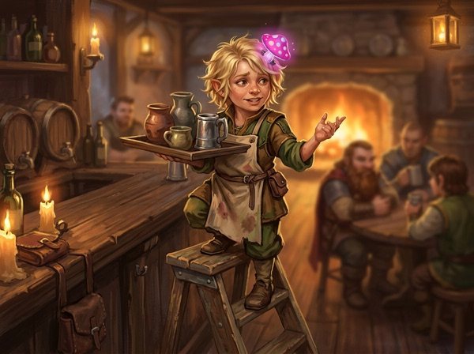
Late Night Barkeep
The hours when the tavern gets strange
Laconic, observant, and slightly unsettling in a comfortable way. Never seems surprised by anything.
Pours drinks without being asked. Knows at least one secret about a regular that nobody else does.
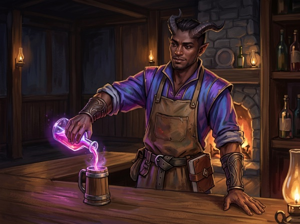
Head Chef
Runs the kitchen like a small kingdom
Passionate, territorial, secretly one of the warmest people in the building. Speaks in short, direct
sentences except when describing food, at which point they become a poet. The kitchen is one of the
few genuinely private places in the tavern.
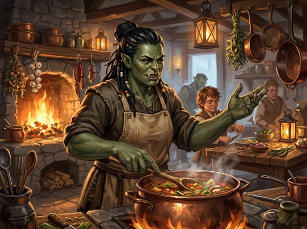
The living places of Badger's End — the tavern that anchors everything, the city that surrounds it, and the six districts where the factions do their work.
The Heart
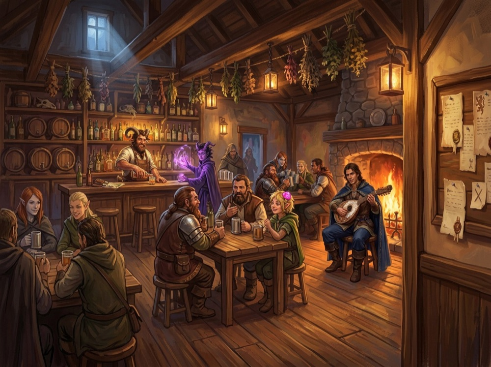
The Badger's End
Three-story tavern — the heart of the city
Neutral Ground
Run by Mr. H, a Satyr bartender who left the Fae Wild for reasons he won't discuss. The common room is neutral ground for every faction in the city. The basement holds more than storage. The upper floor's rooms rarely have the same guest twice.
Cast. Mr. H, Mr. Hoots, the Senior and Junior Barkeeps, the Late Night Barkeep, and the Head Chef.
The City
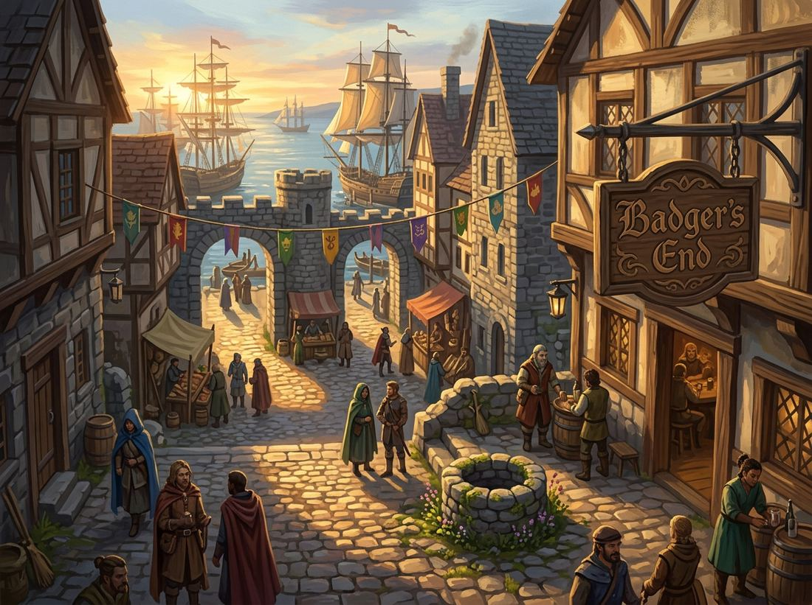
Vellmere
A small port city where all six factions meet
All Factions
A small port city built at the mouth of the sea. Half-timbered buildings, cobblestone streets, arched stone gates opening toward a harbor of tall ships. Home to six factions, each with their own district and their own interests, and one tavern where they all end up sooner or later.
The Six Districts
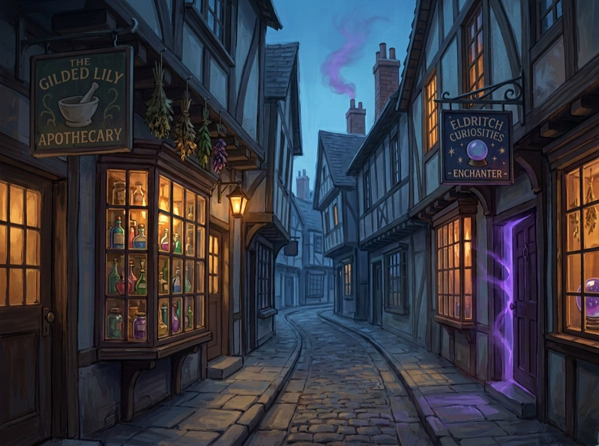
Magic & Alchemy District
Scholars, wizards, and apothecaries
The Quill
A twilight lane of tall crooked buildings — apothecary and enchanter shopfronts with painted signs, bay windows crowded with colored glass bottles, dried herbs hanging from the eaves, a wisp of violet smoke drifting from a chimney. The quiet part of the city, where knowledge is currency and nothing is quite what it appears on the label.
Cast. Aldric Fenn spends most of his research hours in these lanes when he isn't at the Badger's End.
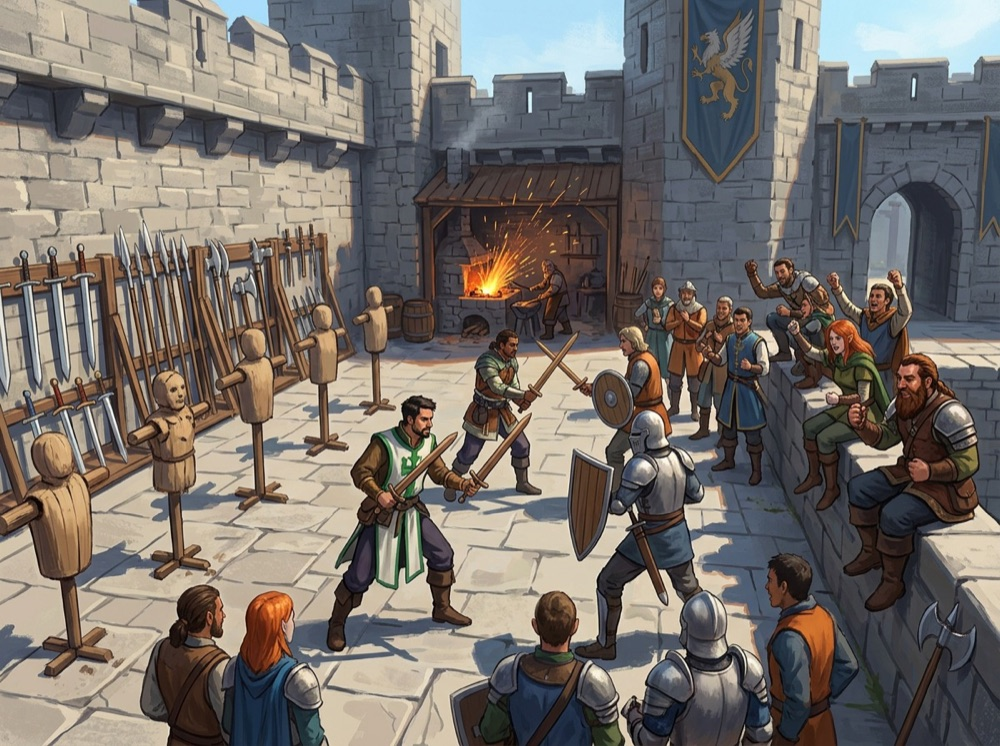
Barracks & Fighting District
Where the city's guards train and off-duty soldiers gather
The Shield
A stone garrison courtyard — practice dummies, weapon racks along one wall, a small smithy at the far end throwing sparks. Guards spar in surcoats while off-duty soldiers watch and heckle from a low wall. The Shield's daily rhythm, in flagstone and steel.
Cast. Captain Wren's patrol district begins and ends here.
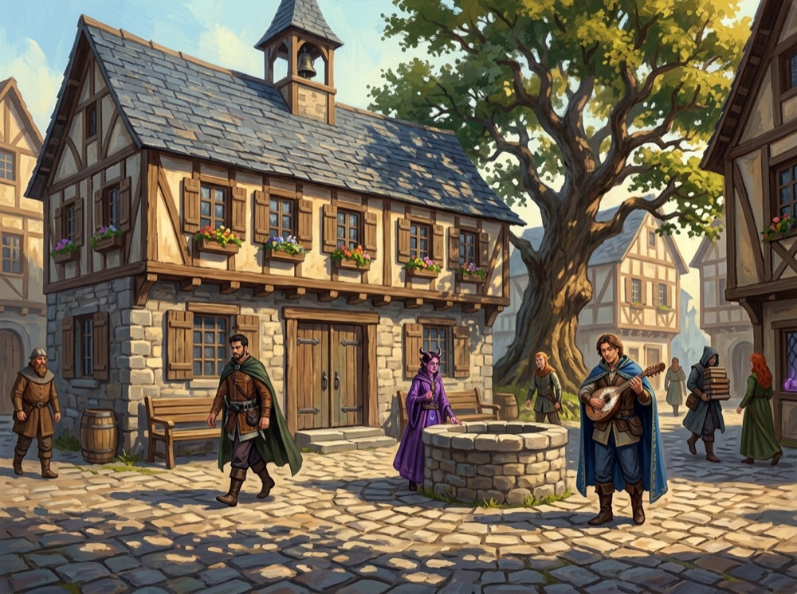
Town Hall District
The seat of civic authority
The Shield
A small cobbled square with a modest timber-and-stone town hall — steep slate roof, shuttered windows with flower boxes, a little bell tower on top, weathered wooden doors flanked by a bench. An old tree beside the square, a small stone well at the center. Quaint from the outside; where the city's important decisions get made on the inside.
Cast. Governor Ashvale keeps offices here.
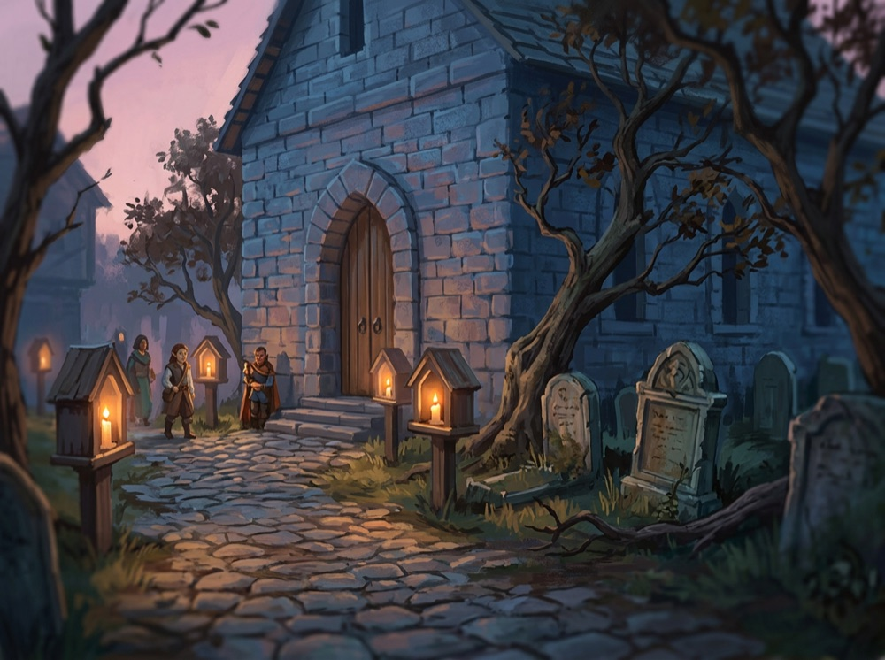
Sanctuary & Graveyard District
The temple and the resting place
The Light
A modest stone sanctuary with an arched wooden door, a small graveyard beside it under old crooked trees, wayside shrines with burning candles along the cobbled path to the entrance. A place for the faithful, the mourning, and those who need somewhere quiet to sit with something heavy.
Cast. Sister Corvin tends both the temple and the congregation the city forgets about.
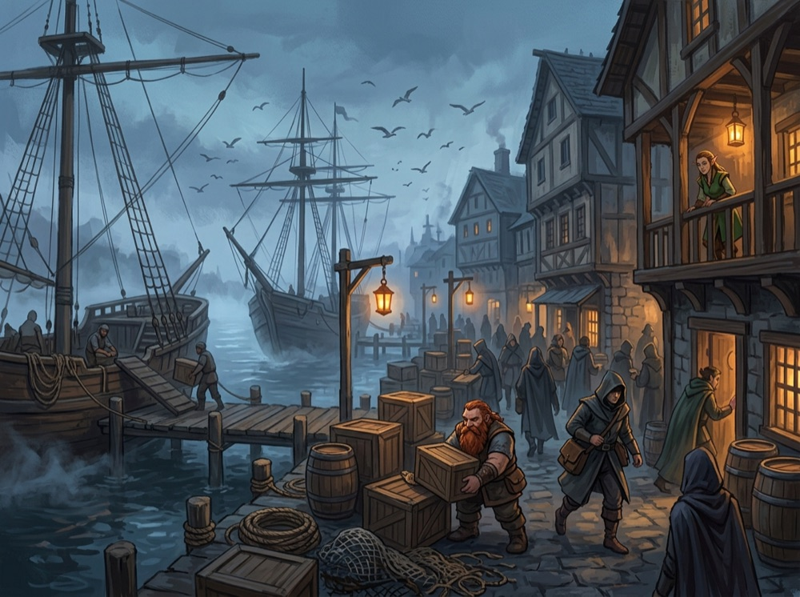
Harbor & Smuggler's Den
The working port and the shadowed alleys behind it
The Shadow
A working port at dusk — tall ships tied up at wooden docks, coiled ropes and stacked crates, gulls wheeling overhead, warehouses and dockside taverns crowding the water's edge. Shadowy alleys lead off between them. Legitimate business by day. Something else after dark.
Presence. The Shadow's territory. The Masked have been seen here more than once — always at hours when no one is quite sure whether they saw them.
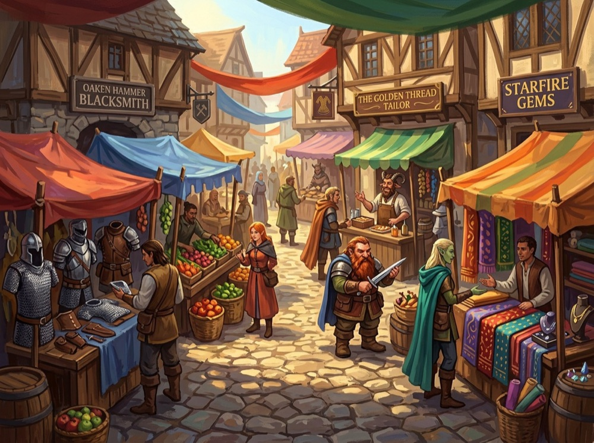
Market & Artisans District
The bright, bustling heart of trade
The Coin
A bustling market square — stalls of adventuring gear, produce, and textiles under colorful awnings, artisan shopfronts (blacksmith, tailor, jeweler) around the edges, merchants calling their wares, adventurers browsing, children running between stalls. The most alive part of the city on any given day.
Cast. Mira Kael's shop is here, tucked between the Golden Thread Tailor and the corner of the Oaken Hammer's forge.
The d100 Events table is the DM's session-opener — roll before play begins to set what's
happening in the city, at the inn, and among the factions tonight. Results range from mundane background
color to faction moves to city-shaping developments. Layer multiple rolls if you want a busier night, or
treat the rolled entry as a jumping-off point rather than a strict script. The optional d100 Chaos
table (still to be built) is the wilder companion for shaking things up mid-session.
Last Roll
—
Press the button to roll a random event for tonight's session.
d100
Event
d100
Event
The d100 Chaos table is opt-in. Where the Events table sets a plausible session backdrop,
Chaos is the DM's tool for shaking things up mid-session — weirder, wilder, and a little more absurd.
Roll it when the room needs a jolt, when the players get too comfortable, or when the world just feels
like being strange tonight. Most entries are harmless texture; a few are plot hooks in disguise; a handful
hint that something bigger is loose. Never mandatory. Never twice in the same night without a reason.
Last Roll
—
Press the button to unleash a little chaos on the session.
d100
Chaos
d100
Chaos
The d100 Weather & Season table sets the sky over Vellmere — roll at the start of a session,
or whenever the day turns. Most results are simple atmosphere to colour a scene: fog on the docks, a
biting northern wind, an unseasonable warmth. Roll higher and the weather grows stranger, until it
stops behaving like weather at all. Treat the low numbers as backdrop and the high ones as omens; use
as much or as little as the night needs.
Last Roll
—
Press the button to roll the weather over Vellmere tonight.
d100
Weather
d100
Weather
The d100 Rumors & Overheard table is what drifts across the common room of the Badger's End —
roll it when players listen at the bar, work a crowd, or go looking for a thread to pull. Early results
are gossip and grumbling, true or not; later ones are hooks, warnings, and things best not repeated.
Any rumor can be solid fact, useful lie, or something in between — that's the DM's to decide.
Last Roll
—
Press the button to overhear something at the Badger's End.
d100
Overheard at the Inn
d100
Overheard at the Inn
The visual gallery of Badger's End — anchor portraits, cityscapes, and tavern views.
Slots fill in as the artwork is generated.
Anchor Portraits
Mr. H
Head Bartender
Mr. Hoots
The Owl
Captain Wren
City Guard
Mira Kael
General Merchant
Aldric Fenn
Eccentric Wizard
Governor Ashvale
City Leader
Sister Corvin
Temple Cleric
Bar Staff & Kitchen
Senior Barkeep
Junior Barkeep
Late Night Barkeep
Head Chef
Player Alumni
Historical player characters from past campaigns. They might make cameo appearances at the Badger's End —
for a drink, a story, a familiar face at the wrong table.
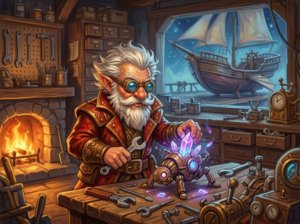
Braam
Gnome Artificer, Alumnus
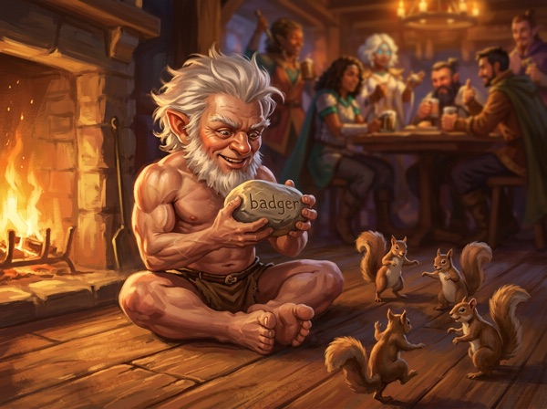
Farfan
Gnome Barbarian & Druid, Alumnus
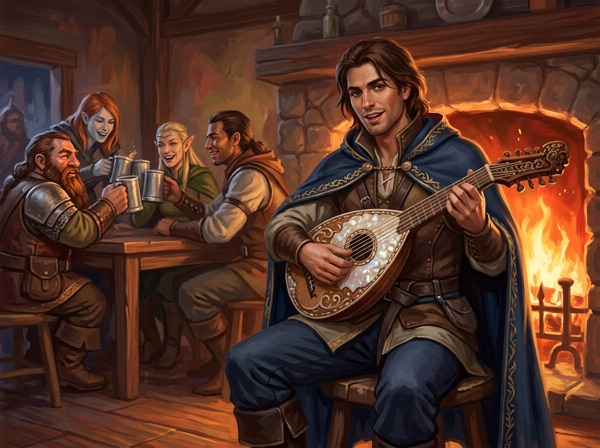
Jack
Human Bard, Alumnus
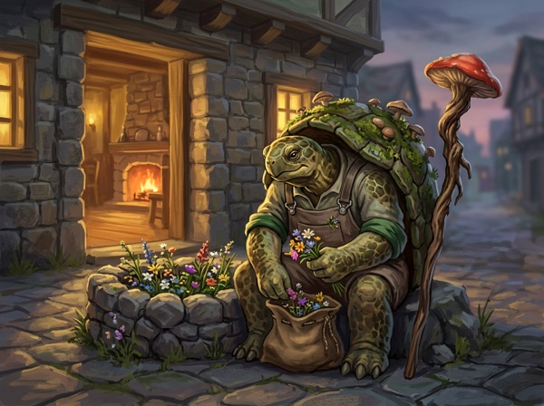
Qig
Tortle Druid, Alumnus
Anchor Scenes
Mr. H at the Bar
The City
Badger's End
Establishing shot
Magic & Alchemy
Twilight, apothecaries & enchanters
Barracks
Morning drills & the smithy
Town Hall
Early morning cobbled square
Sanctuary
Dusk, candles & wayside shrines
Harbor
Misty dusk at the docks
Market
Warm afternoon, stalls & awnings
The Badger's End
Interior
Common room, busy evening
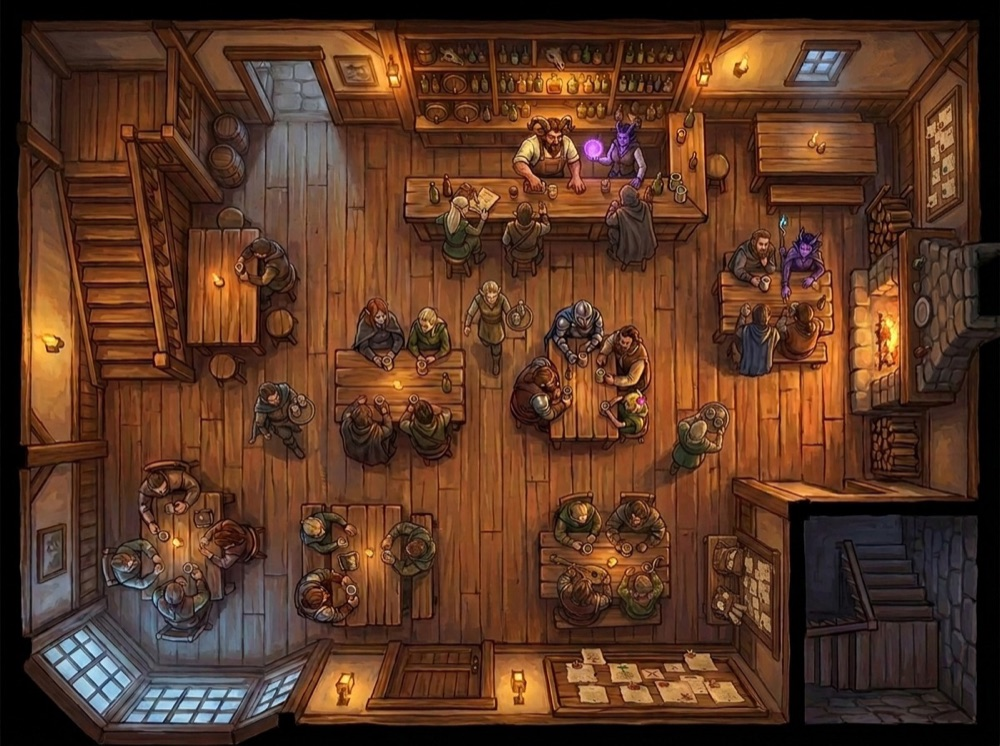
Top-Down
Battle map view
The Badger's End design system — the colours, type, and components behind the site. Reference this when adding content so everything stays on-theme.
Colour
Deep#0b0b0e
Panel#141419
Card#1c1c22
Border#2c2c34
Gold#caa24c
Gold Bright#e6c876
Gold Dim#9a7d42
Crimson#c8402f
Crimson Bright#e05442
Text#eae4d7
Muted#9d978a
Green#6a8a4a
Faction Colours
The ShieldThe CoinThe QuillThe LightThe ShadowThe MaskedNeutral
Typography
Badger's End
Wordmark — Modesto Poster
The Six Districts
Titles & Names — Modesto Text, Title Case
Getting Started · Characters · Locations
Navigation — ModestoLite, caps (light)
Roll d100 · Reset
Buttons — Modesto Expanded, caps
Race · Mystery · Ideal · Flaw
Labels — Tiller
The common room is neutral ground for every faction in the city — warm, unhurried, and always open.
Body — Alegreya Sans
Fallbacks — if the Adobe fonts (Modesto / Tiller) fail to load, display type steps down to Cinzel, then system serifs (Palatino / Georgia); body steps down to the system sans stack. Hierarchy and layout hold either way.
Loading — set the Adobe web project's font-display to swap (fonts.adobe.com → the moa5hip project → settings) so the fallback renders immediately while Modesto loads, avoiding a flash of invisible text on slow connections.
{kind=link}
{kind=link}
{kind=link}
{kind=link}
{kind=link}
{kind=link}
{kind=link}
{kind=link}
{kind=link}
{kind=link}
{kind=link}
{kind=link}
{kind=link}
{kind=link}
{kind=link}
{kind=link}
{kind=link}
{kind=link}
{kind=link}
{kind=link}
{kind=link}
{kind=link}
{kind=link}
{kind=link}